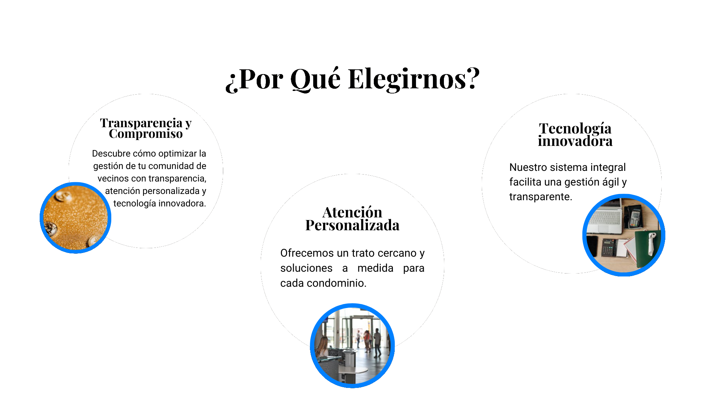
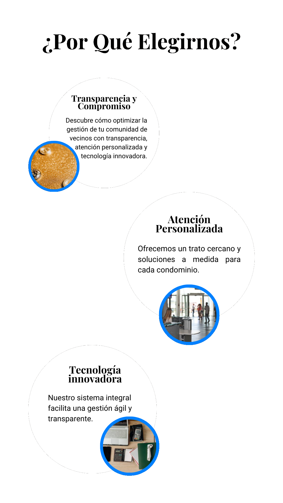

Adobe Administración
¿Quienes Somos?
En Adobe Administración somos expertos en la administración
por más
de 15 años en la administracion de
condominios y bienes inmuebles. Nos enfocamos en brindar
servicios confiables, personalizados y de alta calidad que
garantizan la eficiencia y mejoran la calidad de vida de
nuestros clientes.
Con experiencia y un enfoque en soluciones prácticas y
sostenibles, ofrecemos servicios a medida que se adaptan a
las necesidades de cada comunidad. En Adobe Administración,
trabajamos para ser su aliado ideal en la gestión eficiente
de su patrimonio.
¿Por Qué Destacamos?
Proporcionamos informes detallados y claros sobre el estado financiero, administrativo y operativo del condominio. Estos reportes incluyen ingresos, egresos, estado de cuentas, avances en proyectos y cualquier información relevante para los residentes y el comité de administración.
Presentamos varias opciones de proveedores y servicios con sus respectivas cotizaciones, asegurando que cada decisión sea tomada con la mayor transparencia y con base en costos, calidad y conveniencia. Esto refuerza la confianza en el manejo de recursos y garantiza la optimización del presupuesto.
Mantenemos a los residentes informados sobre actividades, eventos, estados financieros y cualquier asunto relevante del condominio. Nuestro boletín es claro, periódico y fácil de entender, fomentando una comunicación abierta y transparente.
Contamos con un sistema eficiente para registrar, dar seguimiento y resolver cualquier incidencia o problema reportado por los residentes. Priorizamos la atención oportuna para garantizar la tranquilidad de la comunidad.
Ofrecemos soluciones a medida, adaptadas a las necesidades específicas de cada condominio. Entendemos que cada comunidad es única, y nuestro objetivo es brindar un servicio cercano y profesional.
Diseñamos programas de mantenimiento preventivo para garantizar que las instalaciones del condominio estén siempre en óptimas condiciones. Esto incluye acciones regulares que evitan problemas mayores y prolongan la vida útil de las áreas comunes.
Establecemos canales de comunicación efectivos para mantener un contacto directo con los residentes y el comité de administración. Nuestra prioridad es escuchar, informar y resolver cualquier inquietud de manera rápida y eficiente.
Contamos con un sistema tecnológico avanzado que centraliza todas las operaciones del condominio. Este sistema permite la gestión de pagos, control de morosidad, reportes financieros, solicitudes de mantenimiento y comunicación con los residentes de manera rápida, eficiente y segura.
Nuestro sistema no solo agiliza procesos, sino que también asegura la transparencia en todas las operaciones. Los clientes tienen acceso a información clara y actualizada, lo que genera confianza y fortalece nuestra relación con cada comunidad.

